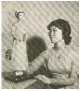

Jacob ước gì mình có một cuộn chỉ không đứt, hoặc một cuộn chỉ có thể tự tìm ra đường đi khi anh đặt nó trên con đường mòn lát đá dăm lẩn khuất giữa những tường cây lá. Nhưng Donnersmarck đã tìm kiếm trong vô vọng một vật hữu ích như thế ở phòng chứa kho báu. Cuộn chỉ mà Jacob buộc vào bức tường lá ở lối vào mê cung có nguồn gốc từ một nhà may ở Vena, và không sở hữu phép màu nào khác ngoài khả năng quay ra những sợi chỉ cứng chắc từ len lông cừu bình thường. Nó sẽ là sợi chỉ cứu sống họ. Niềm hy vọng duy nhất của họ để không bị lạc lối giữa những bức tường lá.
Jacob cẩn thận để sợi chỉ trượt qua những ngón tay trong lúc Donnersmarck và anh bước vào giữa đám cành lá tối tăm. Tên sát nhân giăng tấm lưới xanh của hắn rất rộng. Sau một vài khúc quanh họ vấp phải một thanh gươm gỉ sét. Họ tìm
thấy những khúc xương bị gặm sạch, những đôi ủng mục nát, một khẩu súng lỗi thời. Rất nhanh sau đó họ đã không còn biết mình đang đi theo hướng nào, nhưng nỗi lo lớn nhất của họ là những bông hoa trắng mọc dưới bóng những bức tường lá. Quên-chính-mình-đi. Chẳng ích gì nếu giẫm nát chúng hoặc nhổ chúng đi. Tác dụng chỉ càng mạnh hơn khi những bông hoa úa tàn. Họ buộc khăn quanh mũi và miệng và lặp đi lặp lại trong khi đi tên tuổi của họ, hoặc những nơi chốn và đồ vật mà họ đã cùng nhau trải nghiệm. Dù vậy ký ức tan biến dần sau mỗi bước chân, và sợi chỉ chính là sợi dây liên kết duy nhất với thế giới mà họ suýt nữa cũng quên mất.
Lá cây. Cành nhánh. Những ngõ cụt kết thúc trong những bức tường lá xanh. Lặp đi lặp lại.
Jacob đã từng thoát khỏi nhiều nơi mà người khác dễ dàng lạc lối, thậm chí cả đảo Tiên cũng không thể biến thế giới của anh trở thành hư không như thế này. Anh sờ lên vết sẹo trên bàn tay mà răng cáo đã để lại để anh không đánh mất chính mình trong vòng tay của Hồng Tiên.
Đừng quên cô ấy, Jacob.
Quên chính mình, chứ không phải cô ấy.
Một lần nữa con đường lại kết thúc trước một bức tường lá. Donnersmarck chửi thề, chém dao vào những cành cây. Bên trái. Bên phải. Mọi lời lẽ đều mất hết ý nghĩa. Jacob quấn sợi chỉ lại để nó dẫn anh và Donnersmarck quay trở lại ngã rẽ ban nãy.
Đừng quên cô ấy.
Họ đã lạc lối ở đây bao nhiêu giờ rồi? Hay bao nhiêu ngày rồi? Từng có thứ gì khác tồn tại trên đời ngoài mê cung này không? Jacob quay phắt lại và nắm lấy khẩu súng khi anh nhác thấy một người đàn ông đang rút dao ra sau lưng mình.
Kẻ lạ mặt hạ dao xuống. “Jacob, là tôi đây!” Donnersmarck. Nhẩm lại tên nào. Jacob. Không, chỉ có một cái tên anh không được phép quên. Cáo. Cô ấy vẫn còn sống. Lặp đi lặp lại. Cô ấy vẫn còn sống . Anh dựa người vào đám lá xanh tươi. Mùi hương của hoa Quên-chính-mình-đi tràn ngập trong đầu anh với cái hư không dính nhớp ấy.
Anh vấp ngã - rồi ôm lấy ngực.
Cú cắn thứ tư.
Không, không phải bây giờ.
Cuộn chỉ rơi khỏi tay khi anh đau đớn khuỵu gối xuống. Donnersmarck loạng choạng đuổi theo cuộn chỉ, vừa vặn bắt được trước khi nó biến mất sau những bức tường lá.
Cơn đau làm tim Jacob đập liên hồi, nhưng tất cả những gì anh có thể nghĩ là: Không phải bây giờ. Không phải ở đây! Trước tiên anh phải tìm được cô đã!
“Cậu làm sao vậy?” Donnersmarck cúi xuống anh. Rồi sẽ qua thôi, Jacob. Luôn là như thế mà.
Cơn đau đớn ở khắp mọi nơi. Tràn ngập da thịt anh.
Donnersmarck quỳ xuống bên cạnh anh. “Ta sẽ chẳng bao giờ tìm thấy lối ra mất.”
Suy nghĩ đi, Jacob . Nhưng bằng cách nào, khi cơn đau đã làm tê liệt lý trí anh
Anh thò những ngón tay run rẩy vào túi. Nó đâu rồi? Anh tìm thấy tấm danh thiếp trong lần khăn tay vàng. Từ lúc nào đã có một dòng chữ trên đó.
Cần tôi giúp không?
Jacob áp tay lên lồng ngực đau nhói. Câu trả lời thoát ra khỏi môi anh chẳng dễ dàng gì. Một cuộc giao dịch như thế này sẽ kết thúc chẳng tốt đẹp gì.
“Vâng.”
“Cậu làm gì vậy?” Donnersmarck sửng sốt nhìn chằm chằm vào tấm danh thiếp. Những dòng chữ mới xuất hiện trên đó.
Sẵn lòng thôi. Tôi hy vọng đây sẽ là khởi đầu cho một sự hợp tác đôi bên cùng có lợi. Anh đã sẵn sàng trả giá tôi đưa ra chưa?
“Bất cứ gì ông muốn.” Khó mà đắt hơn giá của Hắc Tiên được. Miễn là anh thoát ra khỏi cái mê cung này!
Tôi tin lời anh.
Mực xanh lá. Xanh như mắt của Earlking. Guismund đã bán linh hồn mình cho quỷ dữ. Còn anh đang bán linh hồn cho ai đây?
Cơn đau đã giảm bớt, nhưng Jacob vẫn cảm thấy buồn nôn vì mùi của hoa Quên-chính-mình-đi, và anh chỉ còn mù mờ nhớ tên mình.
Tấm danh thiếp trống trơn.
Thôi nào!
Những chữ cái hiện ra chậm rãi đến độ làm người ta khó chịu.
Rẽ trái hai lần rồi rẽ phải.
Rẽ phải hai lần rồi vẽ trái,
Tên yêu râu xanh đã giăng lưới như thế.
Đứng dậy nào, Jacob! Nó là một mô hình. Chẳng gì khác hơn một mô hình.
Donnersmarck vấp phải anh. Rẽ trái rồi rẽ trái lần nữa. Phải. Jacob cho cuộn chỉ tiếp tục chạy qua tay. Rẽ phải. Rẽ phải lần nữa. Rồi rẽ trái.
Ánh sáng một ngọn đèn lồng hiện ra giữa những bức tường lá. Cả hai vội vã nhào về hướng ấy, chắc mẩm rằng nó sẽ biến mất chỉ trong một khoảnh khắc nữa thôi. Nhưng bức tường lá mở ra, và họ đang đứng giữa khoảng không.
Ngôi nhà đứng trước mặt họ đã cũ. Cũng già cỗi như dòng họ đáng sợ chủ sở hữu của nó. Huy hiệu trên cổng vào bị mưa gió bào mòn, nhưng vẻ tráng lệ của những bức tường và những tòa tháp xám vẫn không hề suy suyển qua hàng trăm năm. Những đường nét tối sẫm như tan biến vào bóng đêm. Bên cạnh cổng vào một chiếc lồng đèn đang cháy, và ánh sáng hắt ra từ hai khung cửa sổ tầng một.
Đứng sau một trong hai khung cửa sổ đó là Cáo.